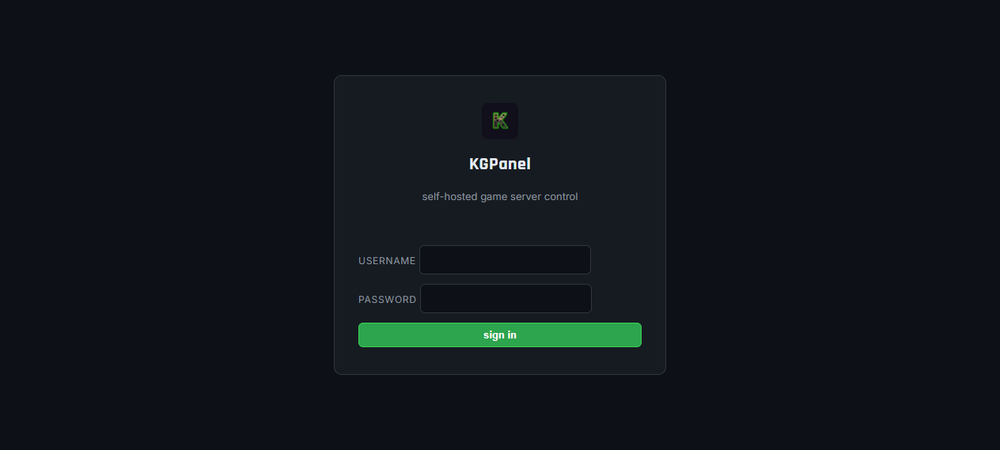
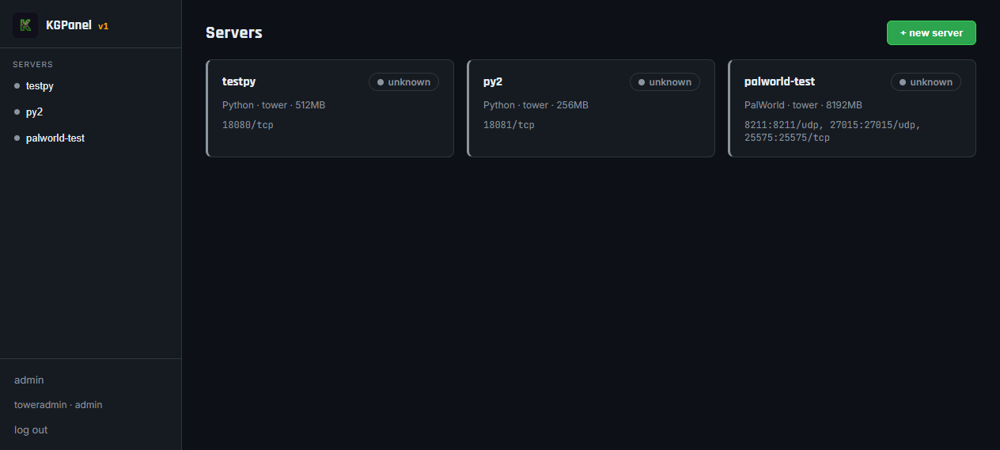
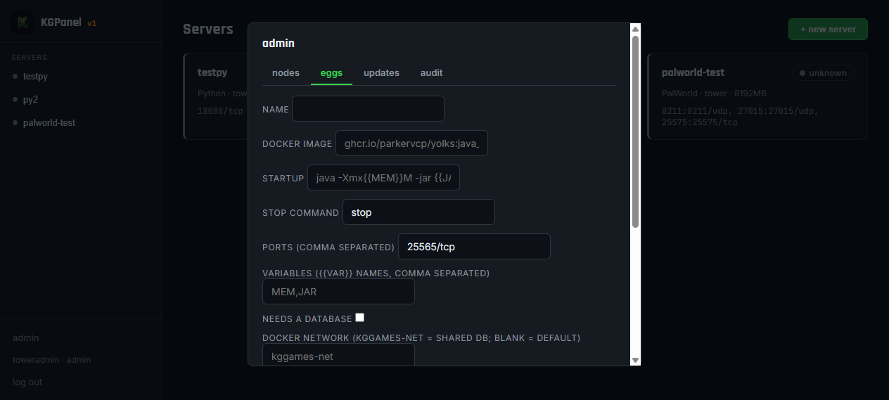
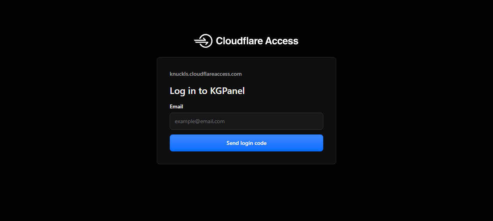

THE easy version — every single step, with real pictures from a working install.
Works on Linux, macOS, and Windows. Follow the section for YOUR computer. If a screenshot doesn't look exactly like yours, don't panic — your screen just has different names on it. The buttons are in the same place.
10.15.34.121.panel.yourname.com.Go to the releases page: https://github.com/MrKnuckls/kgpanel/releases
Download the TWO programs that match your computer:
| Your computer | Download this for the panel | Download this for wings |
|---|---|---|
| Windows | kgpanel-windows-amd64.exe | wings-windows-amd64.exe |
| Linux (most servers) | kgpanel-linux-amd64 | wings-linux-amd64 |
| Mac | kgpanel-darwin-amd64 | wings-darwin-amd64 |
Put both files in a folder you can find, e.g. C:\kgpanel (Windows) or ~/kgpanel (Linux/Mac).
Don't know if your computer is amd64 or arm64? On Windows run echo %PROCESSOR_ARCHITECTURE% in PowerShell. If it says AMD64 get amd64; if ARM64 get arm64. On Linux/Mac run uname -m.
The panel program makes one secret number (a "secret") and needs it every time it starts. Make one now — keep it somewhere! You need it again after every restart (or save it in the service file below).
openssl rand -hex 32 — copy the long number you get and paste it into a notepad. That's your secret.cd C:\kgpanel./kgpanel-windows-amd64.exe --listen :8080 --data .\data --secret YOUR-LONG-SECRET-HERE
docs/INSTALL.md §14.sudo install -m 0755 kgpanel-linux-amd64 /usr/local/bin/kgpanel sudo mkdir -p /var/lib/kgpanel
sudo kgpanel --listen :8080 --data /var/lib/kgpanel --secret YOUR-LONG-SECRET-HERE
docs/INSTALL.md §3).You should see a line like KGPanel listening on :8080.
secret is required, you forgot to paste your secret — press Ctrl+C and run the command again with --secret filled in.Open your browser and go to: http://localhost:8080 (on the same computer). If the panel is on a different computer, use that computer's IP instead, like http://192.168.1.50:8080.
First time ever — the page shows a sign-up form. The very first account you make is the admin (the boss account). Use a password with 8+ characters.

Wings is the helper that runs ON the computer with the games. That computer must have Docker installed.
curl -fsSL https://get.docker.com | sh. Verify with docker --version in a NEW terminal window.Pick a wing token (a password for the panel→wings connection). Make one up that's long and random, e.g. mywings-token-9x7q2. Save it — the panel needs it in the next step.
mkdir C:\ProgramData\wingswings-windows-amd64.exe into it.cd C:\ProgramData\wings ./wings-windows-amd64.exe --listen :8081 --token YOUR-WING-TOKEN --data .
docs/INSTALL.md §15.sudo install -m 0755 wings-linux-amd64 /usr/local/bin/wings sudo mkdir -p /var/lib/wings
sudo wings --listen :8081 --token YOUR-WING-TOKEN --data /var/lib/wings
docs/INSTALL.md §7.Test wings is up — in your browser: http://<game-computer-ip>:8081/v1/health. You should see {"status":"ok",...}.
| Box | Put this |
|---|---|
| name | anything you'll recognise, e.g. gaming pc |
| url | http:// + the game computer's IP + :8081, e.g. http://192.168.1.50:8081 |
| wings token | the EXACT same token you typed when starting wings in Step 4 |
An egg = the recipe for running a game. In the panel: admin → eggs.
Fill it in (example = PalWorld):
| Box | What goes here | PalWorld example |
|---|---|---|
| name | game's name | PalWorld |
| docker image | the base image the game runs in | ghcr.io/parkervcp/yolks:steamcmd |
| startup | command that starts the game | ./PalServer.sh -port={{PORT}} -players={{PLAYERS}} |
| stop command | what to type to save+shut down nicely | stop |
| ports | doors the game uses, comma-separated | 8211/udp,25575/tcp |
| variables | names of the {{PLACEHOLDERS}} used above | PORT,PLAYERS |
Ready-made eggs ship in the eggs/ folder of the project — copy one in instead of typing if you'd rather.
| Box | PalWorld example |
|---|---|
| name | PalWorld |
| egg | the egg you made in Step 6 |
| node | the node you added in Step 5 |
| memory (MB) | 8192 (8 GB) |
| cpu % | 300 (3 cores) |
| ports | the egg's ports — they fill in automatically; change the numbers here if you want different ones |
Click create. The server appears as a card on the dashboard. Click it to open it.
Running Palworld dedicated server on :8211).
10.15.34.121:8211 (udp). This is what players type to join. Click copy to copy it.All settings live INSIDE the panel — no shell, no router, no SSH. Open the server → click the settings tab.
Below it, the egg box edits the game template itself (image, startup, stop, ports, variables) — affects every server using that egg.
Some games keep their world saves in a database instead of files — FiveM (with the popular oxmysql/mysql-async scripts), MySQL-vaulted Minecraft, and similar. KGPanel has a built-in database switch: tick one box and it runs a private MariaDB on the same computer, makes a fresh database + username + password for that game, and hands them to the container as KG_DB_* settings.
kggames-net) — it is never exposed to the internet, and it doesn't touch your domain or SSL. That's the whole point: same box, Docker, no outside access.
kggames-net).kggames-net (the built-in shared DB network). Save.KG_DB_HOST = db (the database server — same computer!) KG_DB_PORT = 3306 KG_DB_NAME = kg_<server id> KG_DB_USER = kgu_<server id> KG_DB_PASSWORD = (random, per server)
server.cfg: set mysql_connection_string "mysql://<user>:<password>@db:3306/<database>?charset=utf8mb4".db:3306 without errors? You have a database. 🗄️Right now the panel is on your local network. To open it from anywhere with https://yourname.com and the padlock, use a free Cloudflare tunnel. It doesn't touch your router at all, and SSL is automatic.
You need: (1) a domain that's on Cloudflare (free at cloudflare.com), (2) an API token with zone-edit permission (Cloudflare dashboard → My Profile → API Tokens → Create Token → use the "Edit zone DNS" template), (3) your Cloudflare account ID (same page, top right).
Then ONE command from a terminal on the panel's computer. Copy the one for your computer exactly, replacing the three YOUR bits:
bash <(curl -fsSL https://raw.githubusercontent.com/MrKnuckls/kgpanel/main/deploy/kgpanel-cloudflare.sh) \ --domain panel.yourname.com --cf-token "YOUR-TOKEN" --cf-account YOUR-ACCOUNT-ID
powershell -ExecutionPolicy Bypass -File kgpanel-cloudflare.ps1 \ -Domain panel.yourname.com -CfToken "YOUR-TOKEN" -CfAccount YOUR-ACCOUNT-ID
It checks your token → finds your domain → makes the tunnel → adds the DNS record → points your domain at your panel → installs the little tunnel helper so it starts automatically → checks the URL.
Pro tip: add --access your@email.com to the command and Cloudflare will ask for that email's login code before showing the panel (this is what you see below):

https://panel.yourname.com in your phone browser (data/WiFi, not the panel computer) and saw the padlock + login? You're on the internet. 🎉docs/INSTALL.md §11 for the no-script dashboard version of this step.| What you see | What it means / do this |
|---|---|
Panel window says secret is required | The secret wasn't passed. Re-run the start command with --secret + your saved secret. |
Server badge says unreachable | Panel can't reach wings. Check the wings URL in admin → nodes, and that wings is still running (firewall port 8081). |
Badge says missing | The game's container hasn't been made yet — click ▶ start once so wings builds it. |
| Graphs empty / badge says unreachable right after updating | Quick fix: restart the panel process once (it sometimes keeps an old connection to wings). |
Console says disconnected | Wings is down, or the game container is stopped. Start wings, then start the game. |
| Sign-up form is gone / login rejected | An admin already exists. Use YOUR account from Step 3. |
docker: executable file not found | Docker isn't installed or not on PATH on the wings computer. Install Docker / Docker Desktop and restart wings. |
| Not sure what version you're on | admin → updates shows it, and even self-updates with one click. |
Full reference with service files, Docker Compose, and every flag: docs/INSTALL.md. Support: the KGPanel repo. GET THIS RUNNING FIRST, BEAUTIFY LATER.